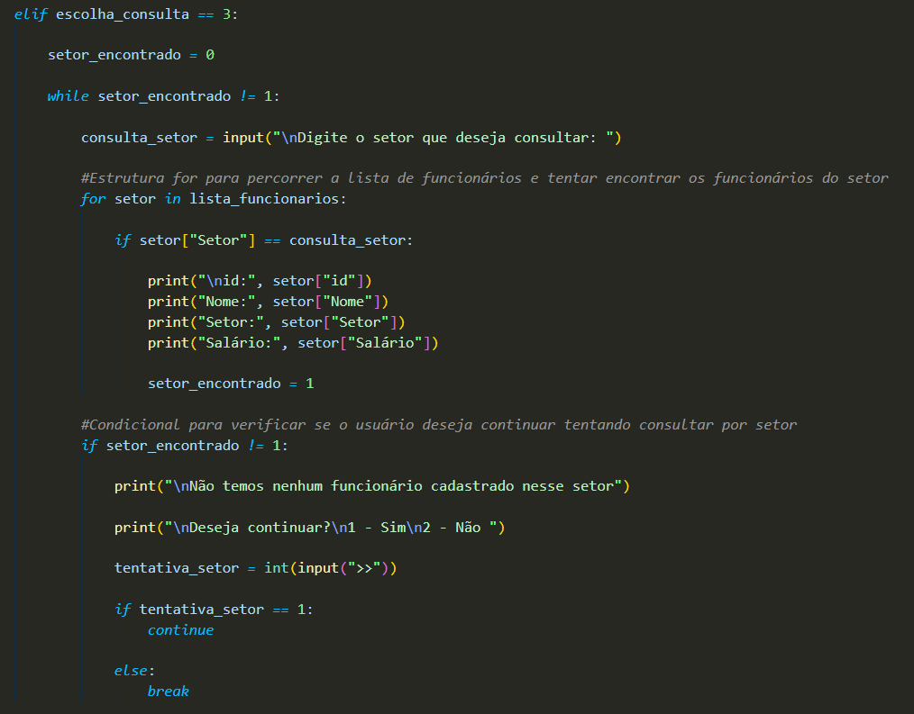
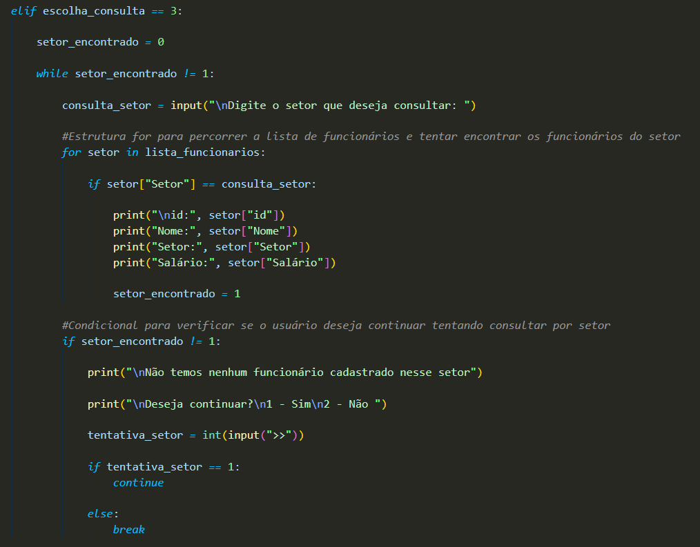

Algoritmo para Cadastro de Funcionários
Criei um algorítmo para cadastro de funcionários na Linguagem Python, usando variáveis, loop e funções na matéria Lógica de Programação e Algorítmos.
Imagem de uma parte do Código:
Criei um algorítmo para cadastro de funcionários na Linguagem Python, usando variáveis, loop e funções na matéria Lógica de Programação e Algorítmos.
Imagem de uma parte do Código:
